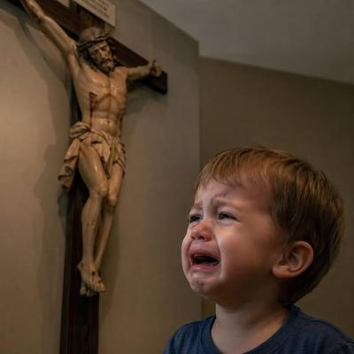

Durante mucho tiempo se ha repetido la idea de que la religión es, por definición, una fuerza benigna que consuela, guía y da sentido. Sin embargo, desde la psicología clínica —y con una mirada crítica y basada en evidencia— esa afirmación resulta, como mínimo, incompleta. Para muchas personas, especialmente aquellas criadas en entornos religiosos rígidos, la fe no ha sido un refugio, sino una fuente profunda de angustia. Y es en este contexto donde surge el concepto de Síndrome de Trauma Religioso (Religious Trauma Syndrome, RTS).


¿Qué es el Síndrome de Trauma Religioso? El RTS (por sus siglas en inglés), fue identificado en 2011 por la psicóloga estadounidense Marlene Winell, quien lo describió como una forma de trastorno de estrés postraumático (TEPT), o incluso TEPT complejo, derivado del daño emocional y psicológico causado por doctrinas religiosas opresivas, abusivas o altamente controladoras.
Marlene Winell es una psicóloga y educadora con un doctorado en Desarrollo Humano, y Estudios Familiares por la Universidad Estatal de Pensilvania. Pero no habla desde la distancia académica: ella misma es hija de misioneros de la iglesia Asamblea de Dios, y ha dedicado varias décadas a ayudar a personas a recuperarse de los efectos psicológicos de entornos religiosos restrictivos. Es autora del libro Leaving the Fold: A Guide for Former Fundamentalists and Others Leaving their Religion (Dejando el redil: Una guía para ex fundamentalistas y otras personas que abandonan su religión), donde analiza precisamente este proceso de ruptura y reconstrucción personal.
Si bien el RTS no aparece como diagnóstico formal en manuales como el DSM-5 o la CIE-10, es reconocido como un conjunto de síntomas clínicamente relevantes dentro de «otras afecciones que pueden ser objeto de atención clínica». En otras palabras: que no tenga una etiqueta oficial no significa que no exista; significa que aún no ha sido plenamente incorporado por las instituciones, algo que ha ocurrido antes con muchos otros fenómenos psicológicos.
Sin duda uno de los aspectos más perturbadores del RTS es su impacto en la infancia. Winell comenta una experiencia profesional realmente impactante: «He tenido pacientes que, de niños, se sentían perturbados por la imagen sangrienta de Jesús pagando por sus pecados.» Detengámonos a pensar en esto: un niño, en pleno desarrollo emocional, expuesto repetidamente a la imagen de un hombre ensangrentado, clavado en una cruz, sufriendo de manera brutal… y además se le dice que ese sufrimiento ocurrió «por su culpa». No es difícil entenderlo. Para un adulto, un «Cristo» crucificado puede ser un símbolo teológico; pero para un niño es una escena de violencia extrema cargada de culpa.
La propia Winell relata su experiencia interna durante su etapa religiosa: «Mi mente luchaba contra sí misma, sin encontrar alivio. Siempre había creído todo lo que me habían enseñado, pero aún sentía que no tenía la aprobación de Dios.»
Y aparece aquí un elemento clave: la culpa estructural. En esos entornos religiosos, el individuo es definido como inherentemente defectuoso, «depravado» y necesitado de salvación constante. Y este tipo de narrativa puede erosionar la autoestima desde edades muy tempranas.
Pero otro testimonio recogido por Winell es todavía más revelador, un ejemplo del terror psicológico como herramienta. Un paciente le describió: «Creía que iba al infierno, porque creí que estaba haciendo algo muy malo. Estaba completamente fuera de control. A veces me despertaba a mitad de la noche, y empezaba a gritar, agitando los brazos, intentando deshacerme de lo que sentía. El miedo y la ansiedad se apoderaron de mi vida.»
No estamos hablando aquí de una metáfora. Hablamos de síntomas claros de ansiedad severa, de terror nocturno, de una mente atrapada en un estado de amenaza constante.
Es decir, cuando doctrinas religiosas enseñan ideas como el castigo eterno, el infierno o la vigilancia divina permanente, el resultado en ciertas personas —especialmente en niños o individuos vulnerables— puede ser devastador. Y desde una perspectiva clínica esto no es una «formación espiritual»: es condicionamiento basado en el miedo.
¿Y cuáles son las causas del RTS? —El RTS suele surgir en contextos específicos: entornos de alto control, donde se exige obediencia absoluta y se limita el pensamiento crítico; en doctrinas basadas en el miedo, como pecado, infierno, castigo eterno, y donde existe manipulación psicológica, coerción, e incluso ultraje lascivo justificado por la autoridad religiosa.
Aunque aquí es importante ser claros: no todas las experiencias religiosas generan trauma. Pero ciertos sistemas —especialmente los fundamentalistas y autoritarios— reúnen las condiciones perfectas para producirlo.
Ahora bien, para detectar a tiempo a una persona que sufre de RTS, es importante saber distinguir sus síntomas:
En primer lugar, el RTS provoca malestar emocional, caracterizado por ansiedad intensa, depresión, miedo persistente a un castigo divino, y culpa y vergüenza crónicas.
Por otra parte, produce problemas cognitivos, como dificultad para tomar decisiones, pensamientos intrusivos, perfeccionismo extremo, y pérdida o confusión de identidad.
Y por último, también produce un impacto social, caracterizado por el aislamiento, pérdida del círculo social religioso, y dificultad para construir nuevas relaciones.
¿Identificas a alguien que esté experimentando esto? ¿Estás experimentándolo tú?
Pero eso no es todo, porque no se trata sólo de lo que la persona vivió dentro de la religión, sino además del trauma que le provoca salir de ella. ¿Por qué es tan difícil salir? Porque abandonar una religión no es simplemente cambiar de opinión. Para muchas personas implica perder su familia o ser rechazados por ella, quedar fuera de su comunidad social, enfrentar la culpa internalizada durante años, y reconstruir desde cero su identidad y su visión del mundo.
Por todo esto, Winell explica que nombrar este fenómeno como «Síndrome de Trauma Religioso», fue una decisión deliberada: ponerle nombre permite estudiarlo, visibilizarlo y, sobre todo, tratarlo.
¿Y cuál es el proceso de recuperación? La recuperación del RTS no es inmediata. Implica un proceso profundo de reconstrucción que pasa por cuestionar y desmantelar creencias inculcadas, procesar el trauma emocional, afrontar la pérdida de comunidad, y construir una nueva identidad basada en la autonomía. En muchos casos, la ayuda de un profesional de la salud mental con experiencia en trauma es fundamental.
Dejemos entonces una reflexión necesaria: Desde una perspectiva psicológica crítica, el RTS obliga a replantear una idea que puede ser perturbadora: las religiones no son intrínsecamente benignas. Pueden ofrecer consuelo, sí, pero también pueden generar miedo, culpa y dependencia emocional. Cuando un sistema de creencias enseña a un niño que es culpable por naturaleza, que merece castigo, o que será condenado eternamente por pensar diferente, no estamos ante un simple marco «espiritual». Estamos ante un entorno con potencial traumático.
Y reconocer esto no es un ataque gratuito a la religión. Es, más bien, un acto de honestidad clínica y humana: escuchar a quienes han sufrido, entender sus experiencias, y dejar de romantizar estructuras que, en muchos casos, han causado daño real. Porque sanar empieza, siempre, por nombrar lo que duele.
[Godless Freeman]
https://www.geledes.org.br/fundamentalismo-religioso-e-causa-de-graves-transtornos-mentais/
Comentarios
Comments powered by Disqus